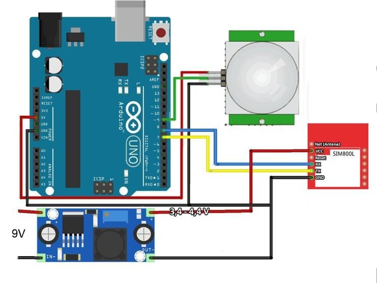

Propuesta de Proyecto: Timbre Inteligente con Alertas de WhatsApp
Este proyecto para la clase de Sistemas de Control presenta un timbre IoT que, al ser presionado, envía una notificación instantánea a WhatsApp.
Explorar PropuestaIntegrantes del Grupo
Componentes Necesarios
Hardware y software esenciales para el timbre inteligente.
Hardware
Software y Servicios
Montaje del Circuito
Conexión del botón al microcontrolador. Se visualizan configuraciones pull-up y pull-down.
Configuración Pull-Up
No se necesita resistencia externa. Pin configurado como `INPUT_PULLUP`. Lee `LOW` al presionar.
Un pin de entrada digital debe tener un estado definido. Las resistencias pull-up/pull-down aseguran un estado estable, eliminando ruido eléctrico y lecturas erráticas.
Lógica y Programación
El código es el alma del proyecto. Conceptos clave: "debouncing", conexión Wi-Fi y API de WhatsApp.
El Problema del "Rebote" del Botón (Debouncing)
Un botón físico genera múltiples señales falsas al presionarse. El "debouncing" ignora estas vibraciones para detectar una sola pulsación real.
Flujo de Notificación de WhatsApp
Usamos CallMeBot. El Arduino Uno envía comandos AT al módulo ESP8266, que a su vez realiza la solicitud HTTP con API Key, número y mensaje. CallMeBot entrega el mensaje a WhatsApp.
Código Fuente del Sketch (Arduino Uno + ESP8266)
#include <SoftwareSerial.h> // Para comunicación serial con ESP8266
// --- CONFIGURACIÓN ---
const int buttonPin = 2; // Pin digital del Arduino donde está conectado el botón
long lastDebounceTime = 0;
long debounceDelay = 50; // 50 milisegundos
int lastButtonState = HIGH;
// Pines para SoftwareSerial con ESP8266
// RX del Arduino (pin 10) al TX del ESP8266
// TX del Arduino (pin 11) al RX del ESP8266
SoftwareSerial espSerial(10, 11); // RX, TX
// Credenciales Wi-Fi (¡Cambia esto!)
const char* ssid = "TU_WIFI_SSID";
const char* password = "TU_WIFI_PASSWORD";
// Credenciales de CallMeBot (¡Cambia esto!)
String phoneNumber = "+1234567890"; // Tu número con código de país (ej. +34621...)
String apiKey = "TU_API_KEY_CALLMEBOT"; // Tu API Key de CallMeBot
// Función para enviar comandos AT al ESP8266 y esperar respuesta
String sendATCommand(String command, const int timeout) {
String response = "";
espSerial.println(command);
long startTime = millis();
while (millis() - startTime < timeout) {
if (espSerial.available()) {
char c = espSerial.read();
response += c;
}
}
Serial.print("Comando: ");
Serial.println(command);
Serial.print("Respuesta ESP: ");
Serial.println(response);
return response;
}
// Función para codificar URL (básica, para caracteres comunes)
String urlEncode(String str) {
String encodedString = "";
char c;
char code0;
char code1;
char code2;
for (int i = 0; i < str.length(); i++) {
c = str.charAt(i);
if (c == ' ') {
encodedString += "+";
} else if (isalnum(c) || c == '-' || c == '_' || c == '.' || c == '~') {
encodedString += c;
} else {
code1 = (c & 0xf) + '0';
if ((c & 0xf) > 9) {
code1 = (c & 0xf) - 10 + 'A';
}
c = (c >> 4) & 0xf;
code0 = c + '0';
if (c > 9) {
code0 = c - 10 + 'A';
}
encodedString += '%';
encodedString += code0;
encodedString += code1;
}
yield(); // Permite que otras tareas se ejecuten (importante para ESP)
}
return encodedString;
}
// Función para enviar el mensaje de WhatsApp a través del ESP8266
void sendMessage(String message) {
Serial.println("Enviando mensaje WhatsApp...");
// 1. Configurar ESP8266 en modo estación (cliente)
sendATCommand("AT+CWMODE=1", 1000);
delay(1000);
// 2. Conectar a la red Wi-Fi
String cmd = "AT+CWJAP=\"";
cmd += ssid;
cmd += "\",\"";
cmd += password;
cmd += "\"";
sendATCommand(cmd, 10000); // Esperar hasta 10 segundos para conectar
delay(3000); // Pequeña espera adicional
// 3. Iniciar conexión TCP con el servidor de CallMeBot
String url = "api.callmebot.com";
String port = "80"; // CallMeBot usa HTTP, no HTTPS directamente para AT comandos simples
String connectCmd = "AT+CIPSTART=\"TCP\",\"" + url + "\"," + port;
String connectResponse = sendATCommand(connectCmd, 5000);
if (!connectResponse.indexOf("OK") == -1) { // Si la conexión TCP fue exitosa
Serial.println("Conexión TCP establecida.");
// 4. Construir la solicitud HTTP GET
String encodedMessage = urlEncode(message);
String request = "GET /whatsapp.php?phone=" + phoneNumber + "&text=" + encodedMessage + "&apikey=" + apiKey + " HTTP/1.1\r\n";
request += "Host: api.callmebot.com\r\n";
request += "Connection: close\r\n\r\n"; // Cierra la conexión después de la solicitud
// 5. Enviar la solicitud HTTP
String sendCmd = "AT+CIPSEND=" + String(request.length());
sendATCommand(sendCmd, 1000); // Enviar el comando para indicar la longitud de los datos
delay(100); // Pequeña espera antes de enviar los datos
sendATCommand(request, 5000); // Enviar los datos de la solicitud HTTP
// 6. Cerrar la conexión TCP
sendATCommand("AT+CIPCLOSE", 1000);
Serial.println("Mensaje enviado (vía ESP8266).");
} else {
Serial.println("Error al establecer conexión TCP con CallMeBot.");
}
}
void setup() {
Serial.begin(9600); // Serial para depuración en Arduino IDE
espSerial.begin(115200); // Serial para comunicación con ESP8266
pinMode(buttonPin, INPUT_PULLUP); // Configurar pin del botón con pull-up interno
Serial.println("Iniciando Timbre Inteligente...");
Serial.println("Configurando ESP8266...");
// Reiniciar ESP8266 para asegurar un estado limpio
sendATCommand("AT+RST", 2000);
delay(3000); // Esperar a que el ESP se reinicie
// Verificar que el ESP8266 esté respondiendo
String response = sendATCommand("AT", 1000);
if (response.indexOf("OK") == -1) {
Serial.println("Error: ESP8266 no responde. Verifica las conexiones.");
while(true); // Detener el programa si el ESP no responde
}
// Conectar a Wi-Fi al inicio
Serial.println("Conectando a WiFi...");
String connectResponse = sendATCommand("AT+CWJAP=\"" + String(ssid) + "\",\"" + String(password) + "\"", 15000);
if (connectResponse.indexOf("WIFI CONNECTED") == -1) {
Serial.println("Error: No se pudo conectar a WiFi. Verifica SSID/Password.");
while(true); // Detener el programa si no hay WiFi
}
Serial.println("WiFi conectado!");
}
void loop() {
int reading = digitalRead(buttonPin);
// Lógica de Debounce
if (reading != lastButtonState) {
lastDebounceTime = millis();
}
if ((millis() - lastDebounceTime) > debounceDelay) {
if (reading == LOW) { // Botón presionado (pull-up)
Serial.println("¡Botón presionado!");
sendMessage("¡Alguien esta en la puerta!"); // Mensaje de alerta
// Esperar hasta que el botón se suelte para evitar envíos múltiples
while(digitalRead(buttonPin) == LOW) {
delay(10);
}
Serial.println("Botón liberado.");
}
}
lastButtonState = reading;
delay(10); // Pequeño retraso para evitar lecturas rápidas innecesarias
}
Explicación del Código
Este sketch de Arduino está diseñado para un **Arduino Uno** que se comunica con un **módulo Wi-Fi ESP8266** usando comandos AT a través de la comunicación serial. Aquí los puntos clave:
- **`SoftwareSerial`:** Se utiliza para establecer una comunicación serial con el módulo ESP8266 en los pines digitales 10 (RX) y 11 (TX) del Arduino Uno.
- **`sendATCommand()`:** Esta función es crucial. Envía un comando AT al ESP8266 y espera una respuesta, lo que permite al Arduino controlar el módulo Wi-Fi.
- **`urlEncode()`:** Una función básica para codificar el mensaje de WhatsApp, asegurando que caracteres especiales se transmitan correctamente en la URL.
- **`sendMessage()`:** Esta función encapsula la lógica para enviar la alerta de WhatsApp. Envía una secuencia de comandos AT al ESP8266 para:
- Configurar el ESP en modo estación (`AT+CWMODE=1`).
- Conectarse a la red Wi-Fi (`AT+CWJAP`).
- Abrir una conexión TCP al servidor de CallMeBot (`AT+CIPSTART`).
- Construir y enviar la solicitud HTTP GET (`AT+CIPSEND` y los datos de la solicitud).
- Cerrar la conexión TCP (`AT+CIPCLOSE`).
- **`setup()`:** Inicializa la comunicación serial con el PC y el ESP8266, configura el pin del botón y realiza una conexión inicial al Wi-Fi.
- **`loop()`:** Lee continuamente el estado del botón. Si detecta una pulsación válida (usando la lógica de debouncing), llama a `sendMessage()` para enviar la alerta a WhatsApp.
**Nota Importante:** Este es un sketch simplificado para demostración. La gestión robusta de comandos AT (manejo de errores, reintentos, análisis de respuestas complejas) es más avanzada y requeriría un código más extenso en un entorno de producción.
Visualizaciones del Proyecto
Notificación de WhatsApp
Ejemplo de la alerta recibida en el teléfono.
Circuito Eléctrico (Ejemplo)
Representación del montaje del Arduino Uno con el módulo Wi-Fi y el botón.
Cámara Pequeña (Ejemplo)
Ejemplo de una cámara compacta para futuras expansiones.
Mejoras y Expansiones Futuras
Este proyecto es un punto de partida. Su diseño modular permite muchas mejoras para un sistema de monitoreo y control más completo.
Alertas Contextuales
Envía diferentes mensajes según la duración de la pulsación (corto: "Timbre", largo: "Urgente").
Captura de Imagen con Cámara
Al pulsar el timbre, se activa una cámara (ej. ESP32-CAM) para tomar una fotografía y enviarla junto con la alerta de WhatsApp.
Comunicación Bidireccional
Usa APIs avanzadas (ej. Twilio) para enviar comandos al ESP desde WhatsApp.
Alimentación por Batería
Optimiza el consumo de energía (modos de sueño) para operación con batería.
Aplicaciones del Proyecto
Hogar Inteligente
Notificaciones de visitantes en tiempo real, incluso cuando no estás en casa.
Emergencias en Fábrica
Alertas instantáneas a personal clave ante fallos de maquinaria o situaciones críticas.
Asistencia en Fábrica
Botón de llamada para asistencia técnica o reabastecimiento en líneas de producción.